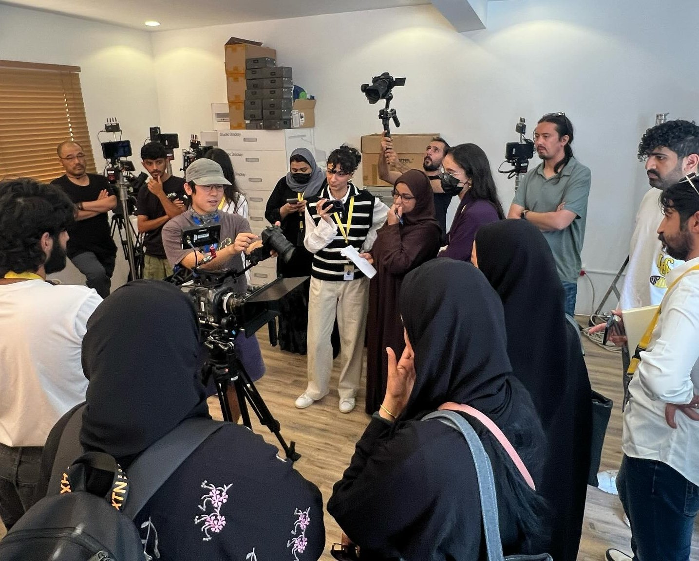
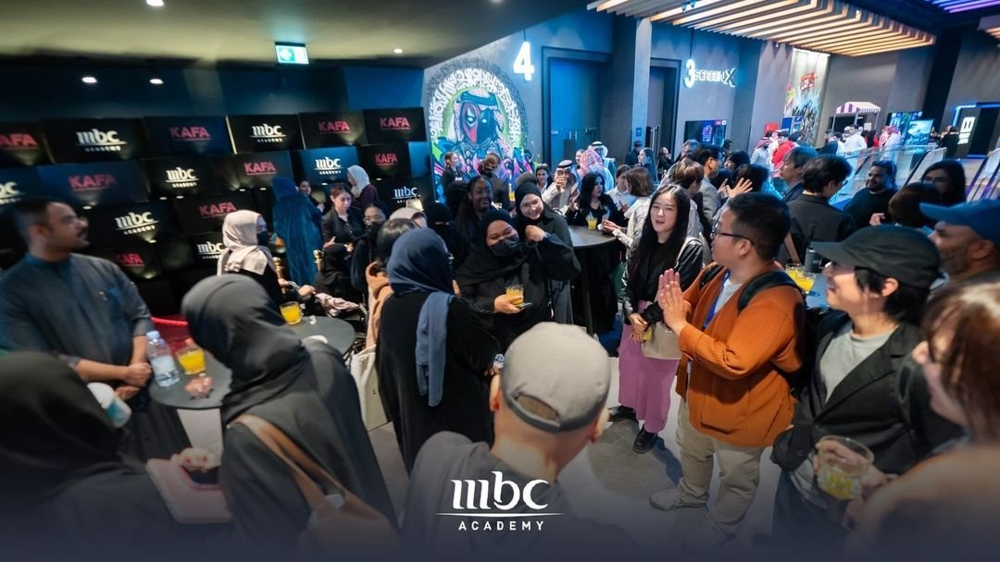
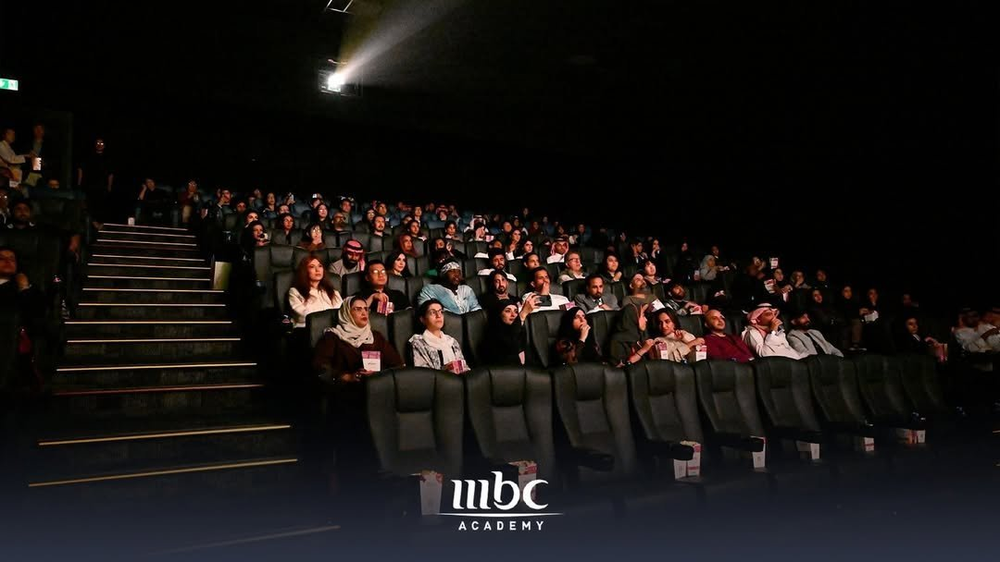
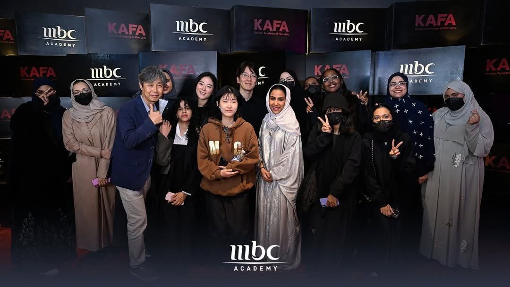

사우디아라비아의 영화산업은 이제 막 본격적인 성장 궤도에 올라서고 있다. 1930년대 아람코(Aramco) 주거 단지 내에서 처음으로 영화가 상영됐지만 1980년대 이슬람 보수주의의 확산으로 모든 영화관이 폐쇄됐다. 그 뒤 약 35년간 공식적인 극장 운영은 금지됐고 사우디인들은 위성방송이나 DVD, 해외여행 등을 통해 간접적으로 영화를 접해야 했다. 전환점은 2018년, 사우디 정부가 영화관 운영을 공식 허용하면서 리야드에 첫 상업 극장이 개장됐고 마블 영화 <블랙 팬서(Black Panther)>가 상영되면서 역사적인 포문을 열었다. 그 후 VOX, AMC 등 글로벌 체인이 진출했고 사우디는 '비전 2030' 프로젝트 일환으로 문화산업 육성에 박차를 가하며 국내 영화 제작 및 해외 영화 유통 모두를 확장하고 있다.
이를 제도적으로 뒷받침하기 위해 2020년 사우디 문화부 산하에 사우디 필름 커미션(Saudi Film Commission)이 설립됐다. 해당 기관은 영화 제작 지원, 국제 공동 제작 유치, 영화인 교육 등 전반적인 산업 인프라 조성에 집중하고 있다. 2024년 6월에는 국제영화위원회협회(AFCI)에도 정식 가입하며 글로벌 콘텐츠 협력과 해외 유통을 위한 교두보 역할을 강화하고 있다.
이 가운데 사우디 필름 커미션이 주목한 대상은 다름 아닌 한국 영화였다. 봉준호 감독의 <기생충>이 비영어권 영화 최초로 아카데미 작품상을 수상하고, 황동혁 감독의 넷플릭스 드라마 <오징어 게임>이 전 세계적인 인기를 얻으며 미국 방송계 최고 권위의 에미상 6관왕을 달성하는 등 한국이 콘텐츠산업의 선두주자로 부상했기 때문이다. 사우디는 이 성공 사례를 벤치마킹해 자국 영화산업 제도 및 콘텐츠 제작에 반영하고 있다.
실질적 교류의 현장
2024년 10월 부산 아시아콘텐츠&필름마켓(ACFM)에서 열린 한국-사우디 양국간 패널 토론에서 한국영화아카데미(KAFA)가 사우디 미래형 스마트시티 네옴(NEOM) 미디어 허브와 협력해 연출, 제작, 촬영 워크숍을 12월부터 진행할 예정이라고 발표했다. 이에 2024년 11월 3일부터 28일까지 한국영화아카데미 소속 전문가들이 사우디 민영방송사 MBC 산하 교육기관인 MBC 아카데미와 협력해 사우디 현지 신진 영화인을 대상으로 연출, 촬영, 제작, 사운드디자인 마스터클래스와 집중 워크숍 프로그램인 '2024 KAFA 부트캠프'를 운영했다.
참가자들은 시나리오, 연출, 촬영, 제작, 편집, 색보정 등 영화 제작 전 과정을 실습하며 최종 단편영화를 완성하고 상영하는 과정까지 직접 경험했다. 한국 측 관계자에 따르면 해당 워크숍은 장비와 제작 인프라 측면에서 사우디 정부의 전폭적인 지원을 받았다.

▲ '2024 KAFA 부트캠프' 현장 — 출처: 영화진흥위원회, 한국영화아카데미
한국 영화 <콘크리트 유토피아> 리야드 상영 및 엄태화 감독과의 만남
2024년 11월 27일 리야드 U 워크(U Walk) 내 영화관에서 영화 <콘크리트 유토피아> 상영과 엄태화 감독과 관객과의 대화(GV)가 열렸다. 해당 영화는 한국에서 2023년 8월 9일에 개봉했고, 사우디에서는 2024년 9월 5일 개봉했다.
한국영화아카데미와 사우디 MBC 아카데미의 주관으로 열린 해당 행사에는 총 150여 명이 참석했다. 행사 관계자와 통신원을 비롯한 세종학당 현지 문화 수업 수강생, MBC 아카데미 수강생, 일반 관객들이 함께했다. 영화 상영 전에는 리셉션과 레드카펫 행사가 마련돼 주요 관계자들과 현지 영화 관계자 간 자유로운 교류가 이뤄졌고, 상영 후에는 감독과의 심도 있는 대화가 이어졌다.

▲ 2024년 11월 27일 리야드 U 워크에서 열린 리셉션 현장 — 출처: 사우디 MBC 아카데미

▲ 영화 상영 관객석 — 출처: 사우디 MBC 아카데미
특히 엄태화 감독의 친동생이 배우 엄태구라는 사실까지 알고 있을 정도로 현지 관객들의 수준 높은 관심은 한국인인 통신원에게도 인상적이었다. 감독과의 대화 시간에는 영화의 연출 의도, 장르적 특성, 한국 영화계의 변화 등에 대한 다양한 질문이 쏟아져 행사 수준을 한층 끌어올렸다. 이번 프로그램은 한국 영화에 대한 현지인의 이해를 높이는 문화교류의 장으로 평가받았다.

▲ 관계자, 엄태화 감독, 조근식 한국영화아카데미 원장, 통신원, 세종학당 문화수업 학생들 — 출처: 사우디 MBC 아카데미
한-사우디 영화 협력, 산업적 기반 다지기
2025년 2월 사우디아라비아 필름 커미션과 영화진흥위원회(KOFIC)는 서울 코리아프레스센터에서 전략적 파트너십 협약을 체결했다. 이번 파트너십을 통해 양국은 공동 제작, 인재 양성, 기술 협력, 정책 교류, 해외 유통 활성화 등 영화 생태계 전반에 걸친 폭넓은 협업을 추진할 계획이다. 특히 사우디의 레드씨국제영화제와 한국의 부산국제영화제를 중심으로 정기적인 네트워킹이 장려될 전망이다. 또한 제작자, 시나리오 작가, 애니메이터, 감독 등을 대상으로 워크숍과 멘토링 프로그램도 운영될 예정이다. 이번 협력은 단발성 교류를 넘어 한국과 중동 간 영화산업의 지속가능한 파트너십을 예고하는 신호탄이자, 사우디 내 한국 영화의 소개와 양국 간 문화교류 확대에 중요한 계기로 작용할 것으로 보인다.
사진 출처 및 참고자료
영화진흥위원회, 한국영화아카데미
VOX Cinemas KSA 홈페이지
사우디 MBC 아카데미 인스타그램 (@mbcacademyme)
Variety (2024.10.5). Neom and KOFIC to Launch Training Initiative as Korea, Saudi Arabia Look to Strengthen Ties – Busan ACFM
Screen Daily (2025.2.24). Saudi Film Commission, Korean Film Council sign strategic partnership to boost industry-wide collaboration